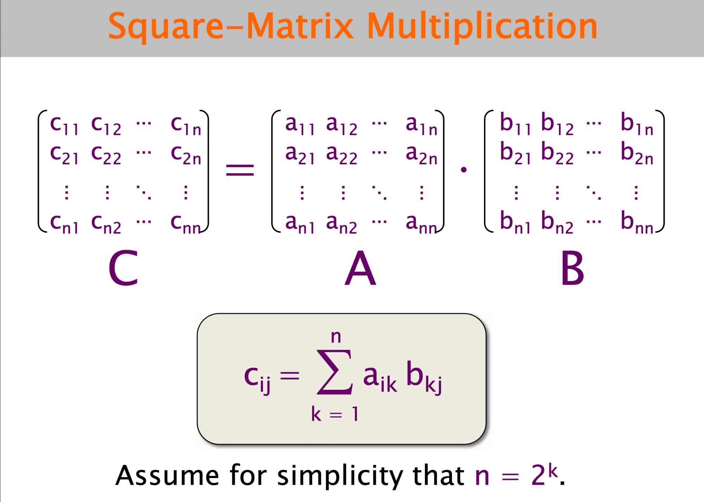
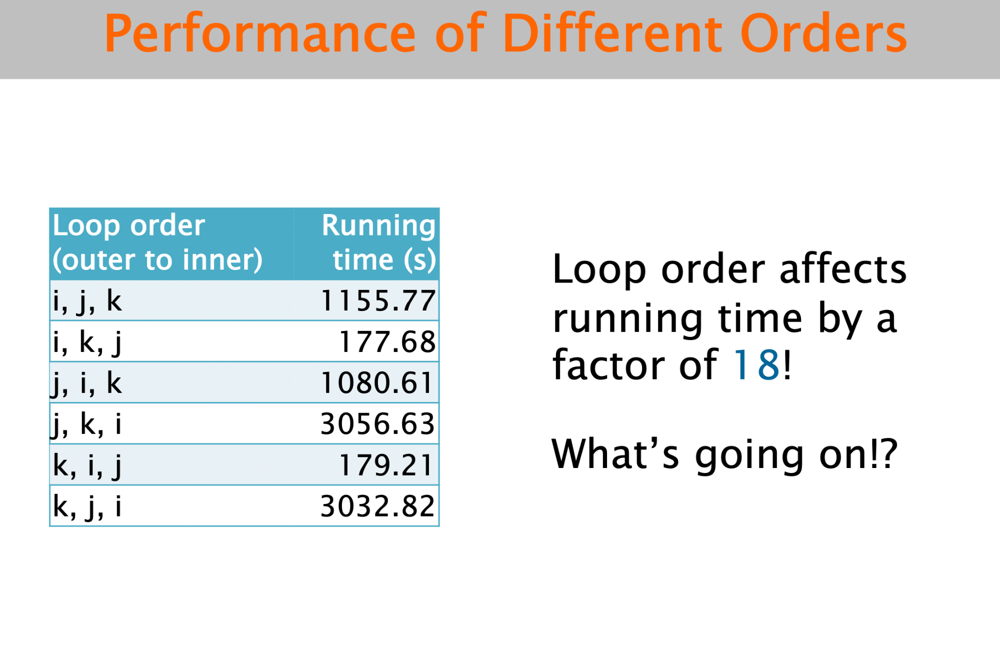

2 square matrices multiplying column by row ,
Performace increases at a great speed just by interchanging loops and this method is very effective .
The reason behind this lies at the hardware and the reaching capacity of the memory pointer . how??
Below are the access patterns for the memory pointer or address pointer who reaches at the memory location of every element in both matrices .
Matrix multiplication was first defined explicitly in order to reflect the effect of composition of linear transformations.